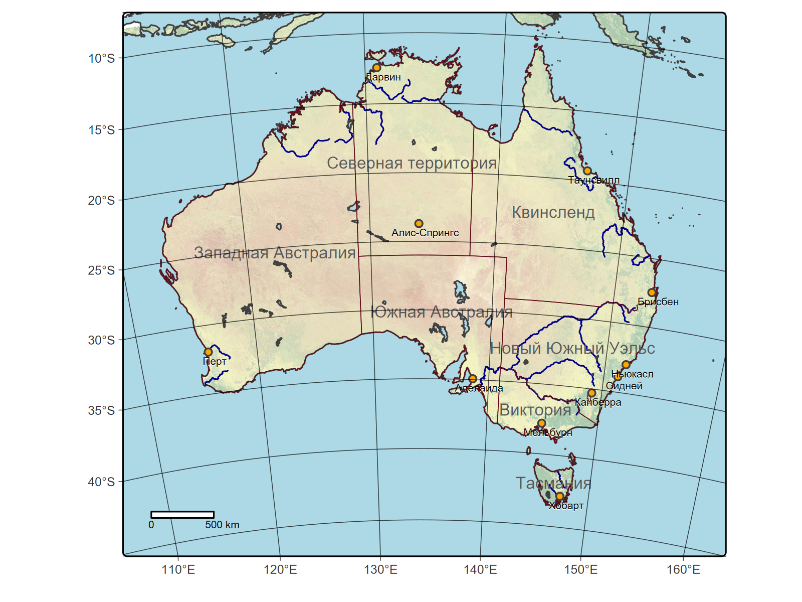

Linking to GEOS 3.13.0, GDAL 3.10.1, PROJ 9.5.1; sf_use_s2() is TRUEterra 1.8.42Loading required package: splibrary(tmap)
root <- "D:/users/platt/shapefile/auxiliary/naturalearth/5.1.2"
# Операции с вектором океана
australia<-sf::st_read(file.path(root,"10m_physical","ne_10m_ocean.shp.zip"))Reading layer `ne_10m_ocean' from data source
`C:\Users\platt\shapefile\auxiliary\naturalearth\5.1.2\10m_physical\ne_10m_ocean.shp.zip'
using driver `ESRI Shapefile'
Simple feature collection with 1 feature and 3 fields
Geometry type: MULTIPOLYGON
Dimension: XY
Bounding box: xmin: -180 ymin: -85.22194 xmax: 180 ymax: 90
Geodetic CRS: WGS 84Spherical geometry (s2) switched offalthough coordinates are longitude/latitude, st_intersection assumes that they are planaraustralia_3112 <- st_transform(australia_cr, crs = "EPSG:3112")
st_crs(australia_3112) # Это будет слой, который мы визуализируем на картеCoordinate Reference System:
User input: EPSG:3112
wkt:
PROJCRS["GDA94 / Geoscience Australia Lambert",
BASEGEOGCRS["GDA94",
DATUM["Geocentric Datum of Australia 1994",
ELLIPSOID["GRS 1980",6378137,298.257222101,
LENGTHUNIT["metre",1]]],
PRIMEM["Greenwich",0,
ANGLEUNIT["degree",0.0174532925199433]],
ID["EPSG",4283]],
CONVERSION["Geoscience Australia Standard National Scale Lambert Projection",
METHOD["Lambert Conic Conformal (2SP)",
ID["EPSG",9802]],
PARAMETER["Latitude of false origin",0,
ANGLEUNIT["degree",0.0174532925199433],
ID["EPSG",8821]],
PARAMETER["Longitude of false origin",134,
ANGLEUNIT["degree",0.0174532925199433],
ID["EPSG",8822]],
PARAMETER["Latitude of 1st standard parallel",-18,
ANGLEUNIT["degree",0.0174532925199433],
ID["EPSG",8823]],
PARAMETER["Latitude of 2nd standard parallel",-36,
ANGLEUNIT["degree",0.0174532925199433],
ID["EPSG",8824]],
PARAMETER["Easting at false origin",0,
LENGTHUNIT["metre",1],
ID["EPSG",8826]],
PARAMETER["Northing at false origin",0,
LENGTHUNIT["metre",1],
ID["EPSG",8827]]],
CS[Cartesian,2],
AXIS["(E)",east,
ORDER[1],
LENGTHUNIT["metre",1]],
AXIS["(N)",north,
ORDER[2],
LENGTHUNIT["metre",1]],
USAGE[
SCOPE["Topographic mapping, environmental studies."],
AREA["Australia - Australian Capital Territory; New South Wales; Northern Territory; Queensland; South Australia; Tasmania; Western Australia; Victoria."],
BBOX[-43.7,112.85,-9.86,153.69]],
ID["EPSG",3112]]xmin <- st_bbox(australia_3112)["xmin"]
xmax <- st_bbox(australia_3112)["xmax"]
ymin <- st_bbox(australia_3112)["ymin"]
ymax <- st_bbox(australia_3112)["ymax"]
xmin_new <- as.numeric(xmin + (xmax - xmin) * 0.2)
xmax_new <- as.numeric(xmax - (xmax - xmin) * 0.22)
ymin_new <- as.numeric(ymin + (ymax - ymin) * 0.2)
ymax_new <- as.numeric(ymax - (ymax - ymin) * 0.12)
st_agr(australia_3112) = "constant"
australia_3112_cr<-sf::st_crop(australia_3112, xmin=xmin_new, ymin=ymin_new, xmax=xmax_new, ymax=ymax_new) # Это будет слой, задающий охват карты
# Прочие векторные слои
rivers.sf<-sf::st_read(file.path(root,"10m_physical","ne_10m_rivers_lake_centerlines.shp.zip"))Reading layer `ne_10m_rivers_lake_centerlines' from data source
`C:\Users\platt\shapefile\auxiliary\naturalearth\5.1.2\10m_physical\ne_10m_rivers_lake_centerlines.shp.zip'
using driver `ESRI Shapefile'
Simple feature collection with 1473 features and 38 fields
Geometry type: MULTILINESTRING
Dimension: XY
Bounding box: xmin: -164.9035 ymin: -52.15775 xmax: 177.5204 ymax: 75.79348
Geodetic CRS: WGS 84rivers.sf <- rivers.sf[st_is_valid(rivers.sf),]
st_agr(rivers.sf) = "constant"
rivers_cr<-sf::st_crop(rivers.sf, xmin=xmin_new, ymin=ymin_new, xmax=xmax_new, ymax=ymax_new)although coordinates are longitude/latitude, st_intersection assumes that they are planarReading layer `ne_10m_lakes' from data source
`C:\Users\platt\shapefile\auxiliary\naturalearth\5.1.2\10m_physical\ne_10m_lakes.shp.zip'
using driver `ESRI Shapefile'
Simple feature collection with 1355 features and 41 fields
Geometry type: MULTIPOLYGON
Dimension: XY
Bounding box: xmin: -165.9656 ymin: -50.66967 xmax: 177.1544 ymax: 81.95521
Geodetic CRS: WGS 84lakes.sf <- lakes[st_is_valid(lakes),]
st_agr(lakes.sf) = "constant"
# Фильтрация регионов
states.sf<-sf::st_read(file.path(root,"10m_cultural","ne_10m_admin_1_states_provinces.shp.zip"))Reading layer `ne_10m_admin_1_states_provinces' from data source
`C:\Users\platt\shapefile\auxiliary\naturalearth\5.1.2\10m_cultural\ne_10m_admin_1_states_provinces.shp.zip'
using driver `ESRI Shapefile'
Simple feature collection with 4596 features and 121 fields
Geometry type: MULTIPOLYGON
Dimension: XY
Bounding box: xmin: -180 ymin: -90 xmax: 180 ymax: 83.6341
Geodetic CRS: WGS 84states.sf$name_ru <- as.character(states.sf$name_ru)
states.sf$name_ru <- trimws(states.sf$name_ru)
states <- states.sf[!is.na(states.sf$name_ru) & states.sf$name_ru != "", ]
state.au <- states[states$admin == "Australia", ]
state.st <- state.au[state.au$type == "State", ]
state.tr <- state.au[state.au$type == "Territory" & state.au$name== "Northern Territory", ]
states.au <- rbind(state.st, state.tr)
table(states.au$name_ru, useNA = "ifany") # Проверяем, что не осталось NA
Виктория Западная Австралия Квинсленд Новый Южный Уэльс Северная территория
1 1 1 1 1
Тасмания Южная Австралия <NA>
1 1 1 # Фильтрация городов
cities.sf<-sf::st_read(file.path(root,"10m_cultural","ne_10m_populated_places.shp.zip"))Reading layer `ne_10m_populated_places' from data source
`C:\Users\platt\shapefile\auxiliary\naturalearth\5.1.2\10m_cultural\ne_10m_populated_places.shp.zip'
using driver `ESRI Shapefile'
Simple feature collection with 7342 features and 137 fields
Geometry type: POINT
Dimension: XY
Bounding box: xmin: -179.59 ymin: -90 xmax: 179.3833 ymax: 82.48332
Geodetic CRS: WGS 84cities.au<-cities.sf[cities.sf$ADM0NAME=="Australia",]
cities.cap<-cities.au[cities.au$SCALERANK<4,]
# Операции с растром
ursa:::.elapsedTime("A1")*** render.R: A1: 9.81(9.42) seconds ***physical<-raster::stack(file.path(root,"../../naturalearth.raster","NE1_LR_LC.tif")) |> as("SpatRaster")
ursa:::.elapsedTime("A2")*** render.R: A2: 9.91(0.10) seconds ***check <- terra::rast(file.path(root,"../../naturalearth.raster","NE1_LR_LC.tif"))
ursa:::.elapsedTime("A3")*** render.R: A3: 9.91(0.00) seconds ***[1] 8100 16200 3[1] 8100 16200 3|---------|---------|---------|---------|========================================= [1] TRUE*** render.R: A4: 61.98(52.07) seconds ***[1] '1.8.42'phys_cropped<-crop(physical, ext(110, 160, -45, -8)) # Обрежем, чтобы быстрее перепроецировалось
phys_cropped_albers<-terra::project(phys_cropped, "+init=epsg:3112")
# Визуализация
tmap_mode("plot")ℹ tmap mode set to "plot".dev.new(width = 8, height = 8, unit = "in")
(tm1<-tm_shape(australia_3112_cr) +
tm_shape(phys_cropped_albers) +
tm_rgb() +
tm_shape(australia_3112) +
tm_polygons(fill="lightblue") +
tm_shape(rivers.sf) +
tm_lines(col="darkblue")+
tm_shape(lakes.sf) +
tm_polygons(fill="lightblue") +
tm_shape(states.au) +
tm_borders(col="#600c1a", lwd=0.5) +
tm_text(text="name_ru", size=0.8, col="#595959")+
tm_shape(cities.cap) +
tm_symbols(cities.cap, size=0.4, lwd=1, fill="black") +
tm_symbols(cities.cap, size=0.38, lwd=1, fill="orange") +
tm_text(text="NAME_RU", size=0.5, xmod=0.48, ymod=-0.77, col="white") +
tm_text(text="NAME_RU", size=0.5, xmod=0.5, ymod=-0.7, col="black") +
tm_scalebar(position=c("left", "bottom")) +
tm_graticules(lwd=0.5, alpha=0.7, col="black")+
tm_layout()
)
fileout <- "./australia_tmap_07_Apr_5.png"
if (!dir.exists(dirname(fileout)))
dir.create(dirname(fileout),recursive=TRUE)
png(fileout, res=300, width=1600, height=1200,
type="cairo", pointsize=10, family="arial")
print(tm1)
dev.off()devSVG
2 